Golden State Star Party 2019
OR: Golden State Star Party by Steve Gottlieb
Last week I spend 5 nights at the Golden State Star Party (GSSP) on the Albaugh's Frosty Acres ranch, located in the northeast corner of the state on the Modoc plateau. I’ve attended all 11 of the previous GSSPs at this location since 2008 (as well as nearly all the earlier versions at Lassen NP and the Shingletown airstrip) and always look forward to getting together with friends under dark skies in a great location.I believe attendance this year was about 400 (from California, Oregon, Washington, Nevada, Texas and ?), spread out over a fairly large cow pasture. The row I was set up on was packed with a number of large telescopes, including Howard Banich's 32-inch, Rick Linden's 28-inch Webster and Bob Douglas' 28-inch Starstructure. The two best nights of the star party were Tuesday and Wednesday (first official day). Clouds arrived after midnight on Thursday, so we only had a good half-night before the skies became too murky. Then after a mostly cloudy Friday night, skies were clear until late on Saturday night. Afternoon temperatures soared a few of the days (mid 90's?), though I generally stayed cool in a motel a couple of miles away in Adin. But there are several attractions in this area of the state to escape the heat including Lava Beds National Monument, Lassen NP, Burney Falls and the Warner Mountains. Evenings were very pleasant and I mostly just wore a sweater in the early evening and a light jacket later on.
Over 3½ nights I logged about 100 objects using my 24-inch f/3.7 Starstructure, observing together with Jimi Lowrey. Here’s a selection of a dozen of the most interesting targets. Images are from the Sloan Digital Sky Survey (SDSS) or the Palomar Observatory Sky Survey (POSS2).
Steve Gottlieb
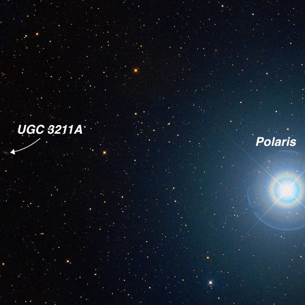
A couple of years ago I wrote an article for Sky & Telescope titled “A Trip to the Northern Frontier”, which was a tour of the galaxies north of +85° declination using observations with my 18” Starmaster. The northernmost NGC galaxy I discussed was NGC 3172 . Amazingly, when John Herschel discovered this galaxy in 1831, its coordinates were 04h 15m 09s +89° 55’ 31”. In other words it was only 4.5’ from the north celestial pole, so NGC 3172 essentially marked the pole position! John Herschel’s nickname “Polarissima Borealis” was certainly appropriate. Since then precession has significantly altered its coordinates, so the J2000 coordinates are 11h 47m 14s +89° 05’ 32”. and currently (July 2018) the declination is just a hair less than +89°.
But is NGC 3172 actually the closest galaxy to the pole? The answer depends on how faint you want to go. UGC 3211A is the northernmost galaxy in the UGC (and original PGC) at a declination of +89° 20’ (J2000). I couldn’t find a reliable magnitude but it’s significantly fainter than NGC 3172 and I would guess the blue magnitude of this low surface brightness dwarf is between mag 16 and 16.5. Unfortunately, one of the major galaxy catalogues (MCG) made a 1 degree error in reporting the declination and this error was copied into the PGC. As a result, the galaxy is misplotted on Megastar one degree too far south. If you’re curious about the “A” designation, this galaxy doesn’t appear in the main UGC catalog but was added in an addendum list of galaxies that were missed when the catalog was compiled but found before the UGC went to print.
Even using a corrected Megastar chart, UGC 3211A was a tough catch in my 24-inch and required some searching to notice the galaxy. At 375x all I found was low surface brightness glow, perhaps 15” diameter, which required averted vision. Examining its DSS image later, I see I only picked up the brighter core . But once it was locked down in the center of the eyepiece field, it was held ~80% of the time with averted vision at 375x. By the way Polaris is 40’ to the west (of course cardinal directions are somewhat meaningless this close to the north celestial pole) so can be used to easily to easily star hop over to the galaxy. I didn’t have good transparency at the time of the observation (observing through thin clouds at best), but I would guess an 18-inch would be required to pick up this galaxy.
The southern hemisphere has its own “Pole Galaxy” — NGC 2573 , which Herschel dubbed “Polarissima Australis”. When discovered at Cape Town, South Africa in 1837, NGC 2573 was within 25’ of the south celestial pole and 50 years later that separation had shrunk to 17’. Since then precession has moved it away from the pole (more accurately the pole has moved away from the galaxy) but it is still within 45’. And as a bonus, nearby are a pair of colliding galaxies — NGC 2573A and 2573B — also within a degree of the south celestial pole. A trip to the southern hemisphere is a prerequisite to see these.
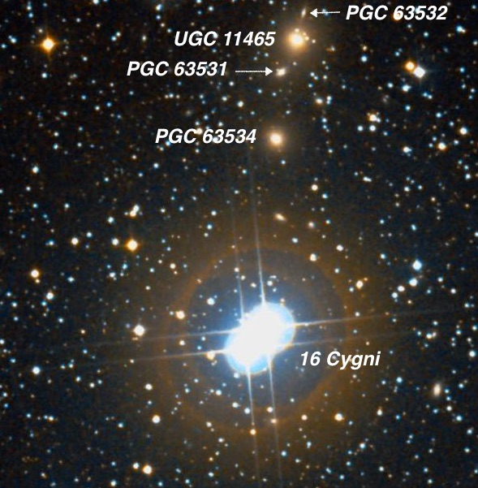
UGC 11465 19 41 42.3 +50 37 56; Cygnus V = 12.8; Size 1.2'x1.2'; Surf Br = 13.0; Type S0
This galaxy group is located in a rich star field just 7’ N of 16 Cygni, a bright wide double star of mag 6.3/6.4 stars at 39” separation (split in 10x50 binoculars)! At 375x UGC 11465 appeared moderately bright, fairly small, round, well concentrated with a bright core that gradually increased to the center. Very near are CGCG 257-007 = PGC 63534 2.3' SSE, PGC 63531 just off the southeast side [50" from center] and PGC 63532 just off the NNE edge [38" from center] . UGC 11465 and CGCG 257-007 form the double radio source 3C 402.
PGC 63531: faint, extremely small, round, 10" diameter (375x). PGC 63532: only occasionally popped as extremely faint and small (500x). PGC 63534 : fairly faint, fairly small, round, very small brighter core.
The galaxy group's location is not far from the Milky Way’s “Zone of Avoidance”. But there appears to be little visual extinction here due to dust (clear window) as UGC 11465 was relatively prominent at a distance of roughly 350 million light years. By the way, the separation of 16 Cygni is quite close to that of Albireo, but is an easier split in binoculars due to its similar magnitudes.
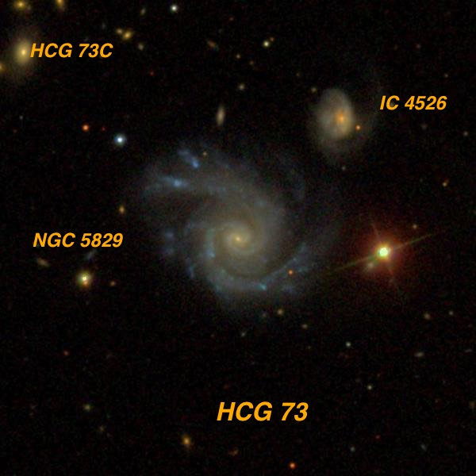
NGC 5829 = HCG 73A = Arp 42 = VV 7 15 02 42.0 +23 20 01; Bootes V = 13.4; Size 1.8'x1.5'; Surf Br = 14.3; PA = 45°; Type Sc
Hickson 73 consists of a relatively bright spiral (face-on NGC 5829) and several fainter companions with higher redshifts. Only three of Hickson’s five galaxies (including IC 4526 = HCG 73B and 73C) have similar redshifts, so this group is really only a physical triplet. In Edwin Hubble's 1920 published version of his PhD dissertation "Photographic Investigations of Faint Nebulae", he noted "IC 4526 is connected to NGC 5829. The two form a double nebula fashioned as a miniature of Messier 51 .” That bridge is illusionary, though, as IC 4526 lies far in the background (redshift over twice that of NGC 5829) and there is no physical connection.
NGC 5829 appeared moderately bright, irregularly round, very small brighter core, low surface brightness halo, ~0.8'x0.6'. A mag 12.4 star is 1.2' W, a mag 14.5 star 1.3' ESE and a mag 16.2 star is 1.3' NE. Two other members of HCG 73 were visible; IC 4526 = HCG 73B at 1.4’ NW (the pair forms Arp 42 = VV 7) and HCG 73C 2.4' NE. IC 4526 appeared faint, small, elongated 2:1 ~N-S, 20”x10” while HCG 73C appeared extremely faint and small, 10" diameter. The mag 16.2 star is at the midpoint of NGC 5829 and HCG 73C.
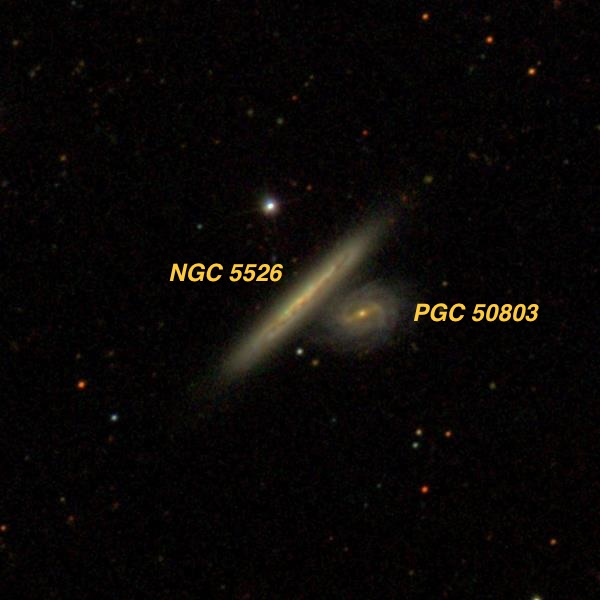
NGC 5526 14 13 53.7 +57 46 17; Ursa Major V = 13.5; Size 1.8'x0.2'; Surf Br = 12.2; PA = 136°
NGC 5526 is a fairly low surface brightness edge-on located 7.5° NE of Mizar, not far from the Draco border. It appeared faint, moderately large, very thin 7:1 NW-SE, ~70"x10", nearly even surface brightness with only a slightly brighter core. A mag 14.3 star is 40" NNE of center.
William Herschel discovered this galaxy on Apr 17th, 1789 and called it “considerably faint, small, elongated.” He missed the fainter companion, PGC 50803 = MCG +10-20-084, which is just a half and arc minute west of center! It appeared very faint, round, 12" diameter. The “companion” actually lies far in the background (5.7 times the distance) at 540 million l.y., so once again this duo are an unrelated line of sight pair and the image shows no sign at all of any interaction.
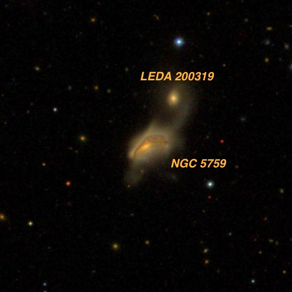
NGC 5759 14 47 14.8 +13 27 25; Bootes V = 13.9; Size 0.6'x0.5'
NGC 5759 is the main component of an interacting pair with a tidal bridge and is quite distorted with a warped dust lane on this SDSS image. Here we really do have a messed up version of M51 , though the main galaxy may itself be a merger! NGC 5759 was logged as fairly faint, irregularly round, bright core is offset to the southeast side and a faint halo that extends only northwest of the core! The companion attached to the tidal bridge is LEDA 200319 , just 45" NNW. It was a very faint, round glow, only 5" diameter, and could just be held continuously with averted vision. A mag 15.2 star is 45" N. There was no sign of the connecting bridge. CGCG 076-042 , situated 3.4’ S (outside the frame of this image), appeared faint, small, elongated 3:2 or 2:1 SSW-NNE, ~25"x15", very small bright nucleus.
Édouard Stephan discovered NGC 5759 back on 7 June 1880 using the 31” silver-on-glass equatorial reflector at the Marseille Observatory in southern France. He missed the tiny companion.
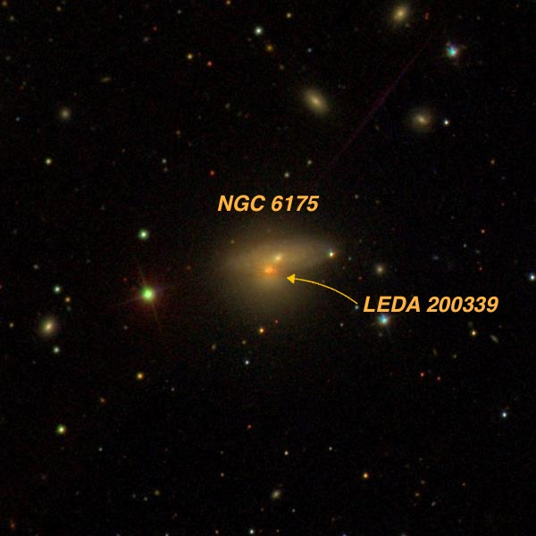
NGC 6175 16 29 57.6 +40 37 50; Hercules V = 13.7; Size 1.3'x0.8'; Surf Br = 13.6; PA = 100°
NGC 6175 is an interacting/overlapping pair and one of the brighter galaxies in the rich cluster Abell 2197 in Hercules. At 375x, I logged it as moderately bright, fairly small, elongated 4:3 or 3:2 E-W, 0.6'x0.4', slightly brighter core. A mag 15.8 star was visible just off the west edge. LEDA 200339 , an overlapping companion, appeared as a slightly brighter "bulge" or "knot" at the south edge. A mag 13.1 star lies 1.4' ESE and a mag 14.3 star is 1.5' SW. A number of members of Abell 2197 are nearby including MCG +07-34-092 4' NE, CGCG 224-52 5.4' NE, CGCG 224-51 4' ESE, UGC 10417 4.7' NW.
William Herschel discovered NGC 6175 on 18 Mar 1787 (his 718th sweep) as well as several other members of Abell 2197 the same sweep — NGC 6146 , 6150, 6160 and 6173. Abell 2197 is one member of the Hercules Supercluster, a chain of galaxies that also includes Abell 2151 (the “Hercules Galaxy Cluster”) and Abell 2199 .
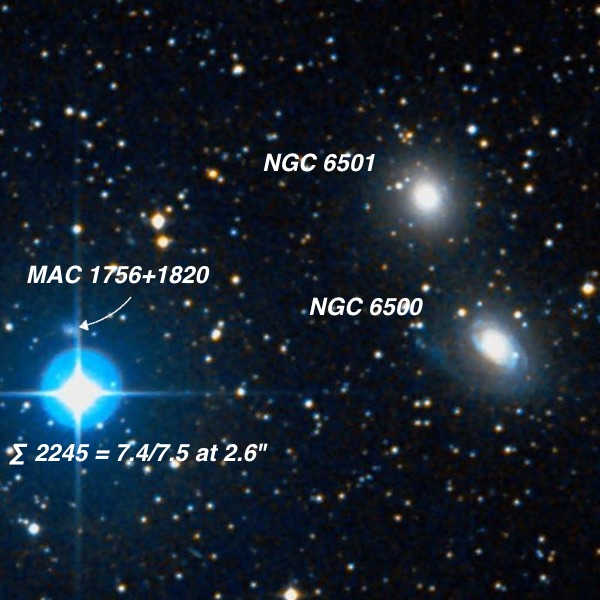
NGC 6500 17 55 59.8 +18 20 18; Hercules V = 12.2; Size 2.2'x1.6'; Surf Br = 13.4; PA = 50°
NGC 6501 17 56 03.7 +18 22 23; Hercules V = 12.0; Size 2.0'x1.8'; Surf Br = 13.3
NGC 6500 and 6501 are two similar bright galaxies though otherwise visually unremarkable. But they form the base of a thin isosceles triangle with a gorgeous double star at the vertex — STF 2245 = 7.4/7.5 pair at 2.6” separation (similar to the components of the double-double). NGC 6500 appeared bright, moderately large, elongated 3:2 SW-NE, well concentrated with a prominent core and small intense nucleus, much fainter halo. NGC 6501 was quite similar, though not quite as elongated. Once again the pair is a William Herschel discovery on 29 Jun 1799, within the last few years of his active observing career.
For an extreme challenge, there is a tiny galaxy (MAC 1756+1820) less than 1’ N of the bright double star. Furthermore, the galaxy has a low surface brightness and the best I could do was get an occasionally pop as a very diffuse hazy spot. Even then it was difficult to confirm due to the bright pair.
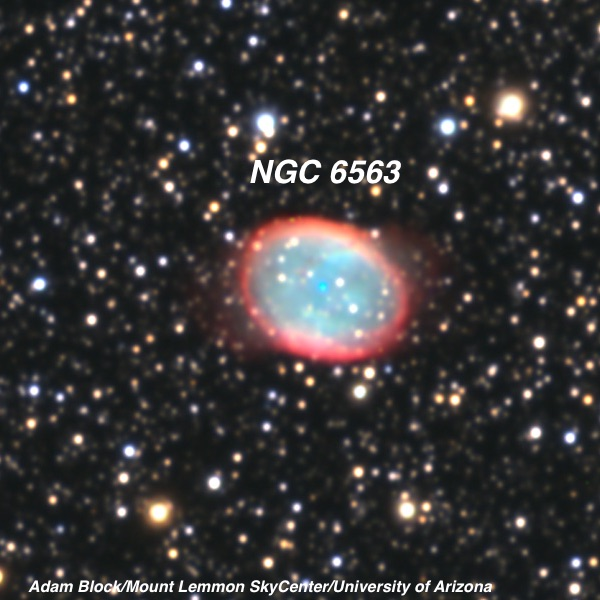
NGC 6563 18 12 02.5 -33 52 06; Sagittarius V = 10.8; Size 50"x37"; PA = 50°
Using 200x and a NPB filter this gorgeous planetary appeared bright, moderately large, slightly elongated SW-NE, ~50" diameter, crisp-edged, irregular surface brightness, weakly annular, resides in a rich star field. At 375x the elongation was more evident as well as a noticeably irregular surface brightness with slightly darker interior areas. A faint star is at the SSW edge and one or two extremely faint stars seemed to be superimposed.
John Herschel found this planetary on 7 June 1837 from Cape Town, South Africa and gave a rather detailed description: "a large, faint, oval, planetary nebula, about 60" long, 50" broad, or 55"; considerably hazy, or rather indistinctly terminated at the borders, but not a brighter middle; a star mag 6-7 precedes it, just 1 diameter of the field and nearly in the parallel [this is probably HD 166197 ].” But the previous year James Dunlop, observing near Sydney with a hand-made 9-inch speculum reflector, found a "faint nebula, about 1 1/4' long and 30" or 40" broad, with a considerable brightness near each end and faint in the middle, resembling two small nebulae joined.” That sounds fairly similar to Herschel's, although his position was off by over a half-degree.
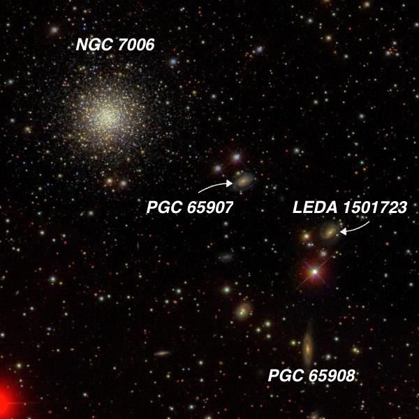
NGC 7006 and nearby galaxies 21 01 29.3 +16 11 15; Delphinus V = 10.6; Size 2.8'; Surf Br = 0.1
This distant globular (~135,000 light years) has a high surface brightness with a very bright mottled core. A half-dozen very faint stars were resolved around the edges of the halo. When William Herschel discovered this globular 21 August 1784, he logged “pretty bright, irregularly round, easily resolvable, about 1' diam. Hazy, otherwise I suppose I might see the stars in it.” His comment “easily resolvable” had a different meaning than observers use today. We would call it “mottled” instead.
Three very faint to extremely faint galaxies lies to the southwest; CGCG 448-030 3.6' WSW, LEDA 1501723 6' WSW and CGCG 448-029 7.4' SW. CGCG 448-030 = PGC 65907: very faint, small, round, very low surface brightness. A mag 15.5 star is at the northeast edge. Forms the SW vertex of an isosceles triangle with two mag 12.8 and 13.6 stars ~40" N and NW. CGCG 448-029 = PGC 65908: very faint, very small, round, 15" diameter, very low even surface brightness. LEDA 1501723: extremely faint, very small, round?, ~8" diameter. Collinear with a mag 11.4 1' SSE and a mag 14 star 30" SSE.
NGC 7006 lies far out in the halo of our Milky Way galaxy, but the three nearby galaxies lie at a distance of nearly 400 million light years — nearly 3000 times as far as the globular!
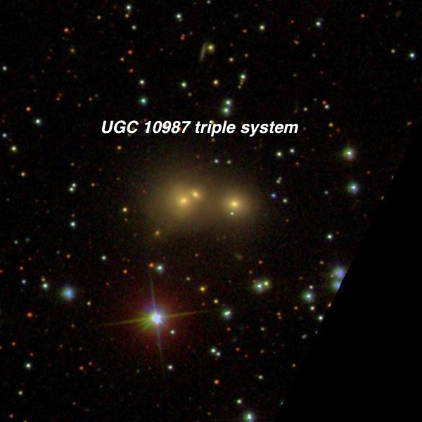
UGC 10987 17 48 19.4 +17 56 53; Hercules Size 1.3'x1.0'
At 375x this merged eastern pair appeared fairly faint, small, elongated 3:2 or 5:3 NW-SE, 20"x14”. The eastern component had a faint stellar nucleus, but the fainter northwest component (UGC 10987 NED2) was not separately resolved. A faint galaxy 30” W was easily resolved and appeared faint, extremely small, round, 10" diameter, faint stellar nucleus.
The triplet was discovered in the early 1960s from galaxy surveys using the Palomar Observatory Sky Survey. But since then it seems to have been little studied, though its part of a small galaxy group (WBL 747) at a distance of ~470 million light years.
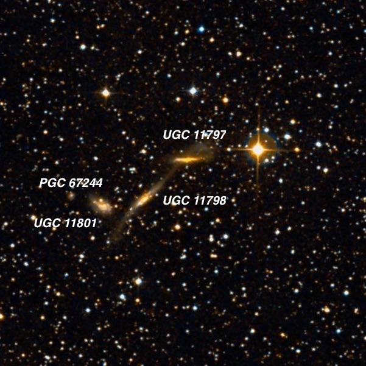
UGC 11797 , 11798 and 11801 21 43 27.0 +43 33 19 ; Cygnus V = 14.3; Size 1.7'x0.3'; Surf Br = 13.4; PA = 137°
Although this was the fourth time I’ve observed this fascinating UGC triplet (look at the stretched tidal arms on UGC 11798 !), I had a terribly difficult time tracking down these low surface brightness interacting galaxies, as they are hiding in a rich Cygnus star field! Finally when I was about to give up, Jimi identified the main triplet using 375x.
UGC 11797 was very faint, fairly small, very thin edge-on 5:1 or 6:1 E-W, 0.7'x0.1', very low even surface brightness. Situated just 2.2' E of a mag 8.5 star (which was annoyingly bright) UGC 11798 was faint, moderately large, very elongated 7:2 NW-SE, 0.8'x0.25', low nearly even surface brightness. UGC 11801 , the brightest of the triplet, was fairly faint, elongated ~3:2 SW-NE, low surface brightness, irregular but no distinct core. A very faint star is at the NE end. PGC 67244 was very tough and only glimpsed as an extremely small puff of smoke.
There’s a great thread on this group with a sketch by Uwe Glahn on DeepSkyForum at http://www.deepskyforum.com/showthread.php?18-UGC-11798-in-Cygnus
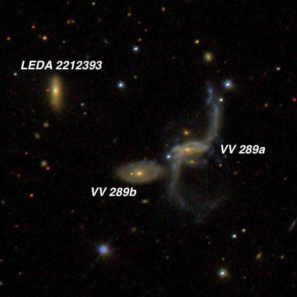
VV 289 = UGC 10610 16 55 00.5 +43 03 30; Hercules Size 2.1'x1.8'
Again this is the fourth time I’ve taken a look at this photogenic interacting pair with a pair of amazing tidal arms. VV 289a is the brighter and larger member of the pair and was easily seen as a fairly faint, fairly small glow, elongated 5:3 ~E-W, ~25"x15", faint stellar nucleus. A dim 16th magnitude star is at the east edge. The tidal plume to the northwest was not seen with confidence though haze was suspected. VV 289b , 0.7' ESE of center, appeared faint, very small, slightly elongated, 15"x12", faint stellar nucleus. Slightly brighter LEDA 2212393 just 1.6' NE appeared fairly faint, small, round, 15" diameter, slightly brighter stellar nucleus. It has a higher surface brightness than VV 289b.
Additional descriptions from Alvin Huey and a sketch of this group by Uwe Glahn are on DeepSkyForum at http://www.deepskyforum.com/showthread.php?401-Object-of-the-Week-July-14-2013-%96-VV-289